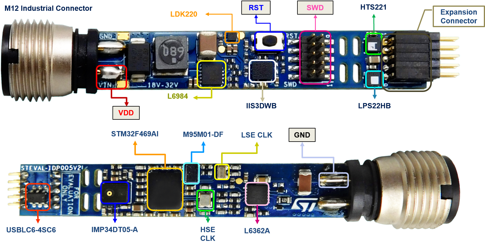

Release Notes for STEVAL-BFA001Vx Board Drivers
Copyright © 2020 STMicroelectronics
License
This software package is licensed by ST under BSD 3-Clause license (the “License”). You may not use this package except in compliance with the License. You may obtain a copy of the License at: BSD-3-Clause
Purpose
The BSP (Board Support Package) STEVAL-BFA001Vx Board Drivers are based on the HAL drivers and provide a set of high level APIs relative to the hardware components and features in the evaluation board for a given STM32 processor.
The BSP drivers allow a quick access to the boards’ services using high level APIs and without any specific configuration as the link with the HAL and the external components is done in intrinsic within the drivers.
The figure below shows the overall architecture: 
Here is the list of references to user documents: